Medicina Nuclear
Aprovechando las energías que unen la naturaleza en favor de la salud de nuestros pacientes
¿Que hacemos?
Múltiples opciones
La Medicina Nuclear dispone de múltiples procedimientos diagnósticos que van dirigidos a valorar el estado de casi cada órgano o sistema de nuestro cuerpo. El objetivo de cada una de nuestras exploraciones es intentar encontrar cual es el origen de sus dolencias.
...también en terapia...
Contamos, asi mismo, con algunos procedimientos terapéuticos altamente especializados. Uno de ellos, el tratamiento de los problemas del tiroides, se practica desde mediados del siglo pasado con gran éxito y todavía se considera uno de sus terapias más eficaces.
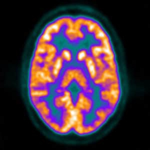
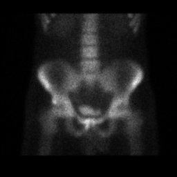
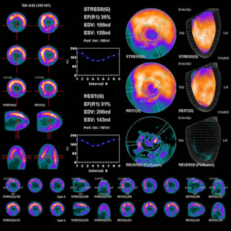
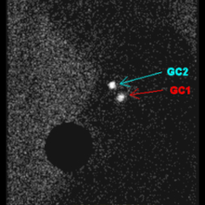
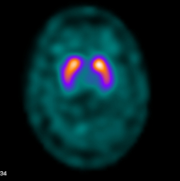
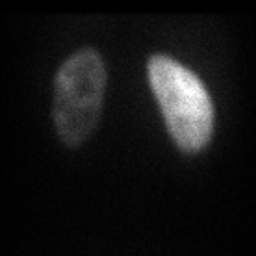
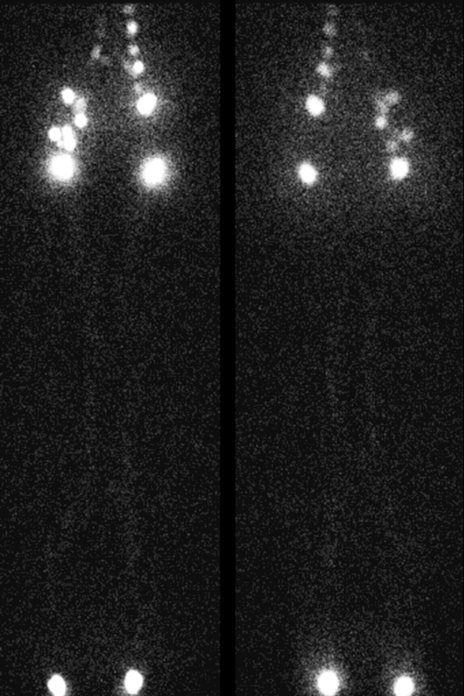
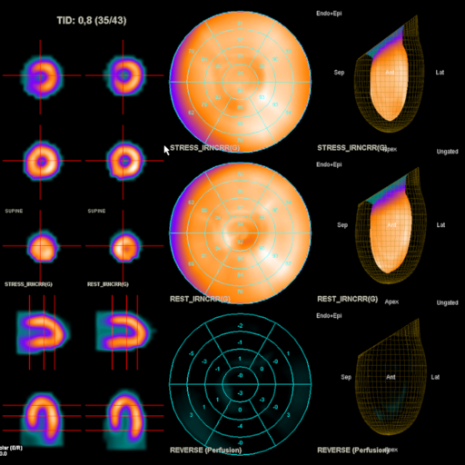
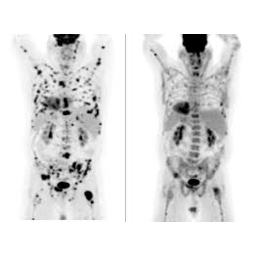
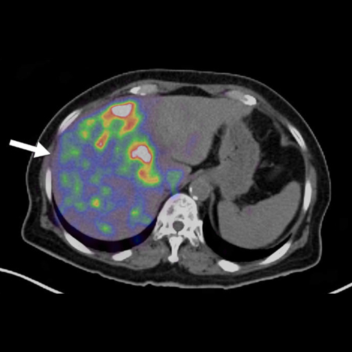
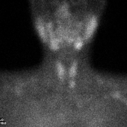
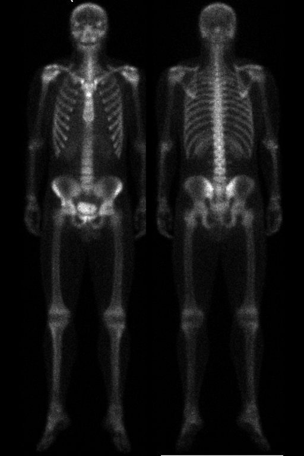
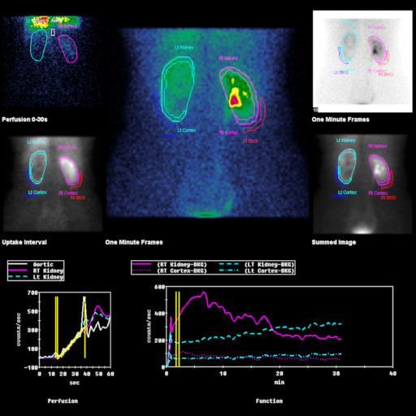
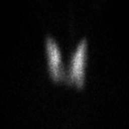
y...seguimos avanzando...
Continuamente se desarrollan nuevos radiofármacos diagnósticos y terapéuticos. Hoy en día una parte importante de la investigación en medicina nuclear consiste en el desarrollo de nuevos fármacos que se puedan usar tanto para el diagnóstico como para el tratamiento, simplemente, sustituyendo el isótopo. Esto se denomina "theragnosis" (terapia+diagnóstico) y es la base de algunos tratamientos actuales de gran eficacia, por ejemplo, en los tumores de próstata podemos usar el Galio-68-PSMA en su diagnóstico y el Lutecio-177-PSMA en su tratamiento o del 18F-DOTATOC en el diagnóstico y el Lutecio-177-DOTATOC en el tratamiento en el caso de los tumores de origen neuroendocrino.
¿Como lo hacemos?
La Gammacámara
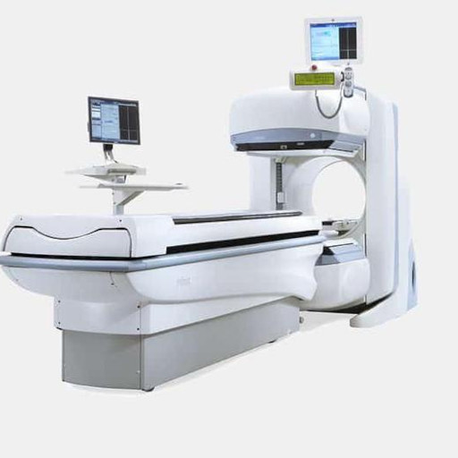
Para obtener imágenes del paciente usamos el equipo de imagen que se ve encima y que denominamos GAMMACÁMARA.
- Dos "cabezales" a modo de "pantallas" que permiten adquirir dos imágenes simultáneamente y que pueden girar y moverse para situarse en la posición deseada para obtener las imágenes.
- Un estativo -denominado gantry en lenguaje médico- al cual están fijados firmemente los cabezas detectores pero que permite que estos giren libremente,
- Una camilla de exploración que puede ascender, descender y desplazarse horizontalmente de forma motorizada para situarse en el lugar a explorar de su cuerpo. Cuando hacemos una imagen de "cuerpo completo" la camilla se desplaza lentamente bajo los cabezales detectores desde la cabeza a los pies.
- Además, dispone de un sistema informático avanzado que transforma la información recibida en forma de radiación emitida por usted en imágenes médicas del órgano o sistema que estemos estudiando. Para saber más...
La gammacámara está formada por:
Sabemos que, en ocasiones, los pacientes sienten cierta aprensión para situarse bajo los equipos de imagen médica, especialmente, los que sufren claustrofobia. En general, la gammacámara no suele provocar tal aprensión pues es un equipo "abierto" y, salvo en ocasiones especiales, los tiempos de imagen no suelen ser superiores a 10 minutos.No obstante, si usted no desea hacerse alguna imagen que le ocasiona especial aprensión no dude en decírselo al técnico quien procurará buscar una solución alternativa o si fuera necesario y, tras consulta con el equipo médico, prescindir de las imágenes que le causan tal estado.Normalmente no es necesario recurrir a la relajación farmacológica y es excepcional la utilización de procedimientos anestésicos para hacerse una gammagrafía.
Los radiofármacos
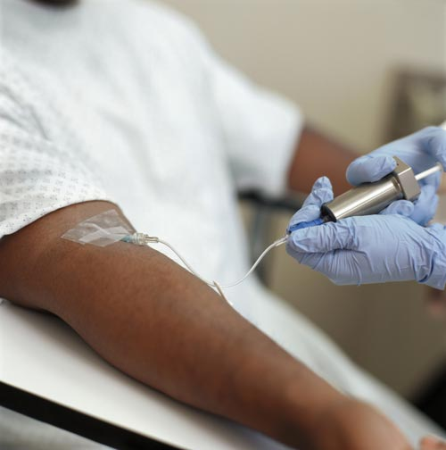
Para obtener imágenes de sus órganos o sistemas es necesario administrar un producto denominado radiofármaco.
- Un "fármaco", que es la parte que, una vez administrado, se va a "fijar" al órgano o sistema en estudio. Cumple todos los requisitos que se le exigen a un fármaco en cuanto a su producción, preparación y cuidados en laboratorios especializados pero que carece, absolutamente, de cualquier efecto físico que usted pueda sentir.
- Un "isótopo radiactivo" que nos permite, al emitir radiación detectable por la gammacámara, obtener las imágenes médicas. Para saber más...
Un "radio-fármaco", como la palabra indica, está formado por dos productos intimamente unidos, a saber:
Los radiofármacos son exclusivamente de uso hospitalario, no pueden adquirirse en farmacias y solo pueden usarlo las personas especialmente adiestradas para ello y dentro de un servicio de medicina nuclear.
La administración de los radiofármacos se realiza, habitualmente, por vía intravenosa -como un análisis de sangre convencional- y, tal y como dijimos más arriba, no le causará ningún efecto.
La radiación que se inyecta es
la mínima y necesaria para cada estudio en concreto y, aun
cuando,
usted va a recibir una pequeña dosis de radiación, ésta es mínima y, a la luz del saber científico
actual, no le provocará ningún efecto a corto o largo plazo.
Habitualmente, tras haber pasado algunas
horas -generalmente, las horas desde que se le inyecta hasta que abandona el servicio- la radiación emitida
hacia el exterior es casi despreciable y puede usted reanudar su vida normal sin miedo a hacerle daño a sus
seres queridos, animales de compañía y público en general.
En las ocasiones limitadas en las que usamos
isótopos de mayor energía (tratamientos con Iodo-131 y estudios con Galio-67 o Indio-111) le daremos
instrucciones precisas sobre las precauciones que deberá tomar con respecto a las personas que conviven con
usted o con el público en general.
Nuestras pruebas
Cardiología
Permite valorar el estado del riego sanguíneo cardiaco y determinar en algunos casos la extensión y localización de áreas de infarto de miocardio.
Para saber más...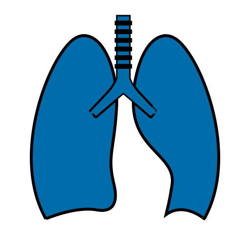
Neumología
Permite valorar el riego sanguíneo pulmonar, lo que, tiene gran valor en los casos de embolia pulmonar aguda y crónica. Puede valorar la reserva pulmonar prequirúrgica, de interés, en procesos tumorales.
Para saber más...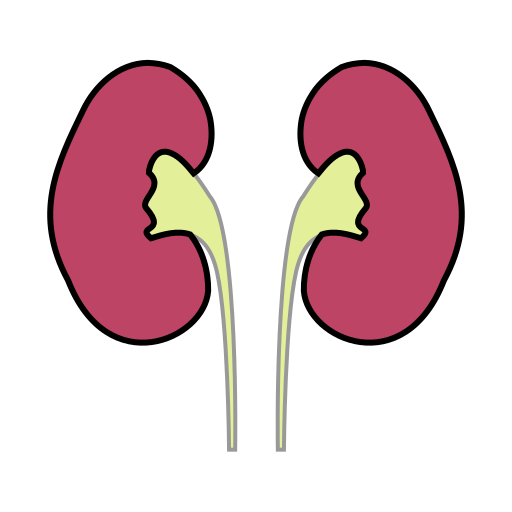
Nefro-Urología
Ayuda a conocer la función renal diferencial -cuanto de la función total corresponde a cada riñón-. En la hidronefrosis ayuda a determinar si es aconsejable su corrección quirúrgica o no.
Para saber más...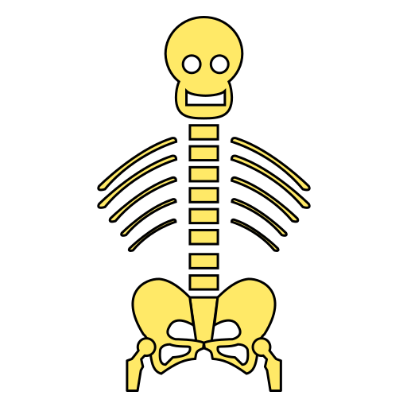
Trauma-Reuma
Valoramos los problemas de huesos y articulaciones ya sean de causa traumática, por envejecimiento o inflamatoria. De valor en el diagnóstico de los problemas de las prótesis articulares.
Para saber más...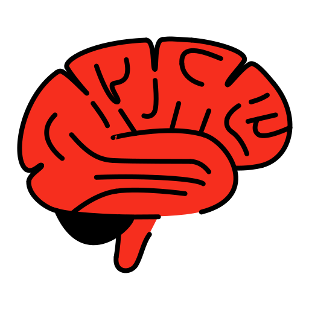
Neurología
Dispone de pruebas de gran interés en el estudio de las demencias y en la valoración de los temblores y la enfermedad de Parkinson. Puede ser de ayuda en el estudio de la epilepsia.
Para saber más...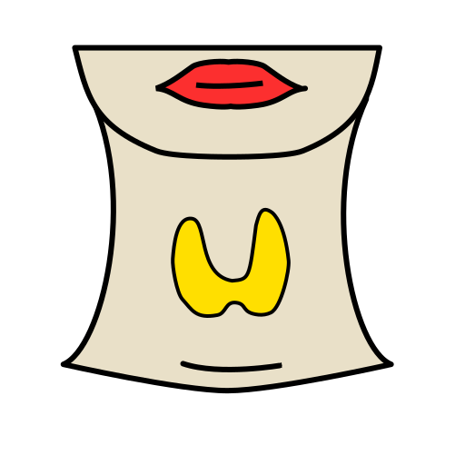
Endocrinología
La gammagrafía tiroidea fue la primera prueba realizada en medicina nuclear, aún hoy juega un papel clave en el diagnóstico de sus problemas.
Para saber más...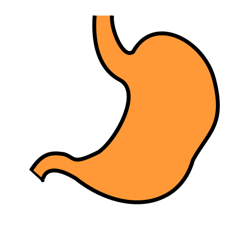
Digestivo
Realizamos algunas gammagrafías para el estudio de problemas digestivos. Se caracterizan, en general, por no ser invasivas y por remedar de forma precisa los procesos fisiológicos normales.
Para saber más...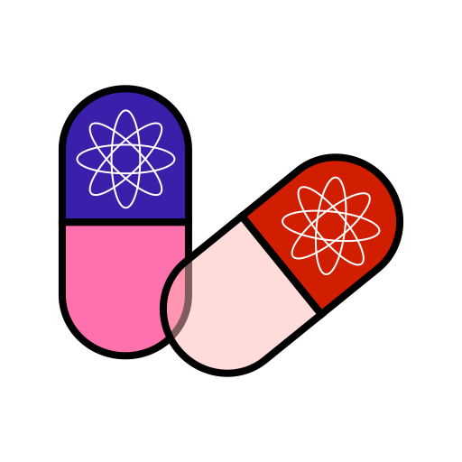
Terapia
La medicina nuclear fue pionera en el uso del Iodo radiactivo para el tratamiento del hipertiroidismo. Ahora disponemos de otros tratamientos como la terapia de la sinovitis articular con Ytrio-90.
Para saber más...Miscelánea
Existen otras pruebas de medicina nuclear que se utilizan en el diagnóstico de otros múltiples procesos que puede consultar aqui.
Para saber más...